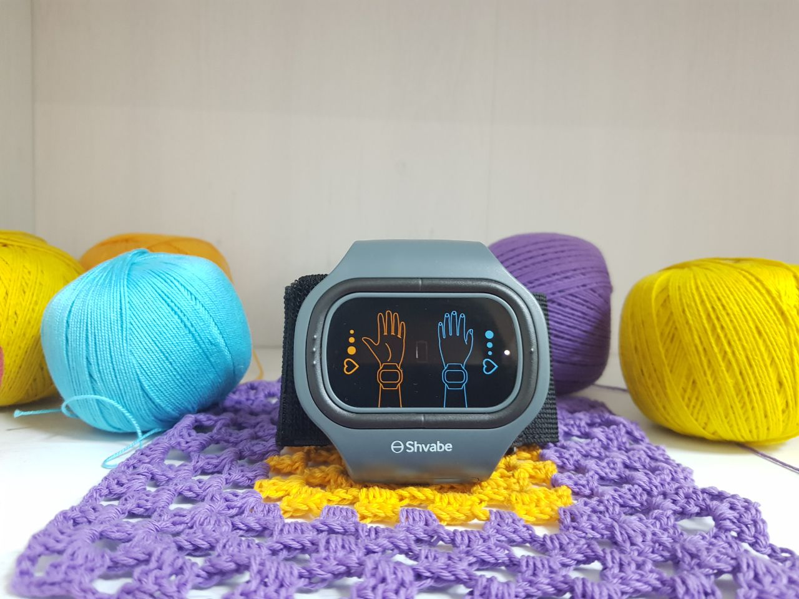
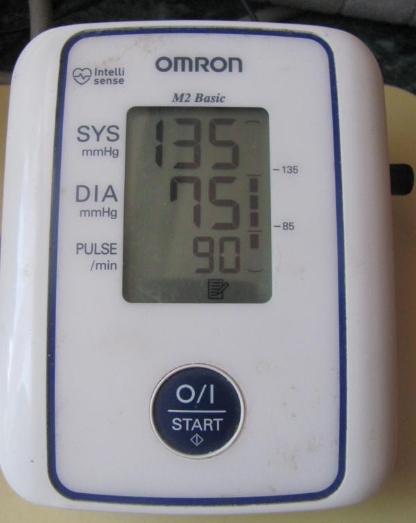

Jakab Andrea 46 éves
Hipertónia? Ma a vérnyomás helyes szabályozásáról.
“Ilyen vérnyomással mások már nem élnek“ – sokszor hallottam ezt a mondatot az orvosok szájából. 200/150 – 250/180, ezek voltak azok az értékek, ami között ingadozott a vérnyomásom. Sokáig kezeltek, és nagy nehezen sikerült levinnem 130/80-ra! Szeretnétek tudni, hogyan? Olvassatok lejjebb.

Egy kis háttértörténettel kezdem. 46 éves vagyok, Andreának hívnak. És már 15 éve élek magas vérnyomással. Már több módszert kipróbáltam, hogy levigyem a vérnyomásom, de semmi sem segített. Klasszikus eset. Úgy éreztem, hogy egyre rosszabbul vagyok, ezért elmentem az orvoshoz. Tesztek, vizsgálat, receptek. Naponta 3-szor gyógyszer. Egy hónap múlva megint rosszul vagyok. Aztán megyek megint a kórházba. Rendelések, tesztek, recept. Megint egy új gyógyszer. És mindez a végtelenségig. Néhány gyógyszert teljesen töröltem, valaminek megháromszorozták az adagját, valahol előírták, hogy az egyik gyógyszert a másikkal erősítsem meg. Már tiszta abszurd volt, hogyha kihagytam egy pirulát, majdnem hogy meghaltam. Olyan rosszul voltam már, hogy a szememet sem tudtam kinyitni a fájdalomtól. A vérnyomás pedig reggel MINDIG stabilan felment. És ekkor megértettem, hogy sokáig nem fogom ezt így bírni.
Elkezdtem keresni alternatív módszereket, de nem túl sokat találtam. Az egyik meg majdnem ki is nyírt. Még jó, hogy amikor leléptem a lépcsőre, a szomszédom, Marcsi. Ellenkező esetben leestem volna a lépcsőn, és eltörtem volna az összes csontom. Ő megfogott, és elvezetett az ágyig. Marcsi az én védőangyalom. Asszisztensként dolgozik egy nagy orvostechnikai társaságnál. És másnap hozta el nekem az АВР-051 készüléket.

Néhány percig forgattam ide-oda ezt a csodálatos karkötőt, és azt hittem, hogy ez valami vicc. De Marcsi biztosított róla, hogy csak egy hét kell, és már sokkal jobban fogom érezni magam, mert ez a vérnyomás-szabályozó egy új technológiás eszköz. Én magamtól biztos nem vettem volna meg, de Marcsinak hittem, ezért úgy döntöttem, hogy kipróbálom.
Úgy néz ki, mint egy kézi vérnyomásmérő, csak 2 programmal rendelkezik. Az első számomra, a magas vérnyomásra. A második pedig azoknak, akiknek alacsony a vérnyomása. Nagyon könnyű használni. Csak felteszed a karkötőt a bal kezedre, és bekapcsolod. A kiválasztott programtól függően a vérnyomás-szabályozó olyan speciális elektromos impulzusokat kezd továbbítani, amelyek visszaállítják az érrendszer feszességét a normális szintre.
Természetesen nem azonnal éreztem a hatást (ez a szervezet tulajdonságaitól és a betegség mértékétől is függ), de mindent az utasítások szerint csináltam. Napi 2-3-szor felvettem néhány percre. A készülékben van egy időzítő, így magától kikapcsol az eljárás végén. A kikapcsolás előtt jelez, és így érthető, hogy vége a szeánsznak.
És szó szerint egy héttel később a vérnyomásom normalizálódni kezdett. Nem hittem a vérnyomásmérőmben, és még vettem is egy másikat. De mindkettő 170/90 mutatott! Ez számomra hatalmas haladás volt a 230/170-hez képest. A vérnyomásom tényleg kevésbé zavart már. Napközben abbahagyta az ingadozást, és reggelenként sem ugrott fel. Jobban aludtam és az általános állapotom is jobb lett. 2 hét után a fájdalom a jobb oldalamban elmúlt, és a fejfájás is eltűnt.
Nem volt többé olyan érzésem, hogy mindjárt felrobban a szemem, hiszen a vérnyomásmérő csak 135/75-et mutatott!

Továbbra is jártam az orvosomhoz ellenőrzésre, aki ugyancsak megjegyezte, hogy az általános állapotom sokat javult. Két hónappal később csináltattam teszteket is. És az orvos, látva a pozitív tendenciát, javasolta a gyógyszereim adagjának csökkentését. Nagyon féltem, de kiderült, hogy hiába. Nem éreztem magam rosszabbul, a vérnyomás-szabályozó valóban segített.
A karkötőt naponta többször is felvéve, észrevettem annak teljes hatását. Nem csak jobban éreztem magam, hanem energikusabb is voltam. A hervadtságom elmúlt, sőt már az időjárásra sem voltam érzékeny. A vérnyomás-szabályozó nemcsak a fizikai, hanem az érzelmi állapotomat is kiegyensúlyozta. Nekem olyan, mintha 15 évvel fiatalabb lennék, mert hosszú idő óta először semmi sem zavar.

Hálás vagyok a szomszédomnak, hogy felnyitotta a szemem, és megmutatta nekem ezt a hasznos készüléket. Tudjátok, ez tulajdonképpen nagyon szuper. Pár év múlva az orvostudomány olyan szintet is elérhet, hogy gyorsan és önállóan is meg lehet gyógyulni. Az АВР-051 vérnyomás-szabályozó. És ha te is lépést tartasz az idővel, és zavarnak a vérnyomás problémáid, akkor kövesd a példámat. Ezenkívül a АВР-051 közvetlenül a gyártótól is megvásárolható a hivatalos oldalon. Nagyon kényelmes. Nem kell a gyógyszertárakban keresni.


-

Egészség-történetek
Közösség
523 résztvevő
8 publikáció egy hónap alatt -

Egészséges nővér, egészséges nemzet
Közösség
15 ezer résztvevő
8 publikáció egy hét alatt -

ÉLJ EGÉSZSÉGESEN
Közösség
9300 résztvevő
10 publikáció egy nap alatt -

Egészséges idegrendszer forradalom
Közösség
21 ezer résztvevő
4 publikáció egy nap alatt -

Boldog egészség éjjel-nappal
Közösség
3200 résztvevő
10 publikáció egy nap alatt
Sarkadi Flóra
2Köszönöm, hogy megírták ezt az érdekes cikket! Minden hipertóniásnak hasznos lenne olvasnia erről és többet megtudnia a korszerű kezelési módszerekről. Én már 20 éve beteg vagyok. Voltam több orvosnál is, különböző készítményeket is próbáltam. Mindenképp megrendelem magamnak ezt a karkötőt, remélem, hogy nekem is segít majd.
Jánosi Gabriella
nálam nem rég diagnosztizálták a magas vérnyomást. Azt gondolom, hogy ez nálam örökletes, mert mindenkinek magas volt a vérnyomása anyukám felől. Most én is kivizsgáltatom magam, remélem, hogy még nem egy elhanyagolt stádiumban vagyok. Tegnap én is megrendeltem a karkötőt, remélem, hogy nem kell évekig gyógyszereket szedjek.
Révai András
Én is hipertóniás vagyok a 20 évemmel. A gyógyszereim nélkül szó szerint meghalok((((( Ha elhagyom a tabletták szedését, írhat is a végakaratomat... Különböző esetek voltak már nálam. És a legrosszabb az, hogy sok gyógyszer egyszerűen csak gondol egyet, és többé már nem hat többé, majd egyre erősebbeket és drágábbakat kell szedni. Jó, hogy megalkottak egy ilyen készüléket! Vele az egészségem sokat javult, az alvás is jobb lett, a fejfájás enyhült. De a lényeg, hogy normalizálódott a vérnyomásom!
Radics Olga
Én már kb. egész életemben ezzel a magas vérnyomással szenvedek! Ezzel a betegséggel nem lehet normális életet élni. Próbáltam kezelni a dolgot, a legjobb orvosokat kerestem fel, de mind hiába. És mennyi pénz ment el minderre!!! már semmiben sem hiszek
Janics András
Mindig találok valami hasznosat itt magamnak. Köszönöm az érdekes cikkeket.
Gara Mariann
32 éve krónikus magas vérnyomást diagnosztizáltak nálam. Ugyanolyan tüneteim voltak, mint a cikk írójának. Azt ajánlom mindenkinek, hogy időben kezdjék el kezelni a betegséget, és ne hanyagolják el. Sajnos annak idején, amikor nálam kezdődött, még nem volt ilyen vérnyomás-szabályozó. Valószínűleg egy ilyen készülékkel nekem is minden sokkal könnyebb lett volna. Most már én is hordom a vérnyomás-szabályozót, és sokkal jobban érzem magam.
Sánta István
Ez sokkal jobb az én fitnesz óráimnál. Nem gondoltam, hogy velem ez megtörténhet. Megvettem a karkötőt a feleségemnek, meg a szüleimnek is vettem, és mindenki nagyon elégedett.
Palotás Mihály
Minden csak az életmódtól függ. Egészségesen kell étkezni és sportolni, figyelni a súlyra, és akkor nem kell rendszeresen orvoshoz járni sem. És nem lesz magas vérnyomás sem. Az egészségünk a mi kezünkben van.
Bárczi Nikoletta
5Valóban a mi kezünkben van az egészségünk, vagyis inkább a kezünkön. Felvettem a karkötőt és kész, nincs probléma a vérnyomásommal. Ez egy szuper találmány, mintha a jövőből csöppent volna ide.
Fási Viola
Mégis mikor szaladgáljak az orvosokhoz, ha egész nap dolgozom? Kinek van ideje rendszeresen orvoshoz járni? Senkinek! És nagyon jó, hogy most már a technológiai fejlődés lehetővé tette, hogy be tudja állítani a vérnyomását anélkül, hogy elhagyná az ember az irodáját vagy akár a buszt, amin hazafelé tart. A vérnyomás-szabályozó tényleg nagyon jól támogatja és szabályozza a vérnyomást.
Perlei Karolina
Nem rég volt egy agyvérzésem. Pont hogy a magas vérnyomás provokálta, amitől már több mint 15 éve szenvedek. Szerencsére nem lettem fogyatékos. Az orvos tanácsára hordom a vérnyomás-szabályozót. Azt akarom mondani, hogy ez valóban sokkal hatékonyabb, mint bármilyen gyógyszer és egyéb eszköz. A felépülésem hihetetlenül gyorsan megy. Stabilizálódik a vérnyomás és az általános közérzetet is javul. Nagyon elégedett vagyok.